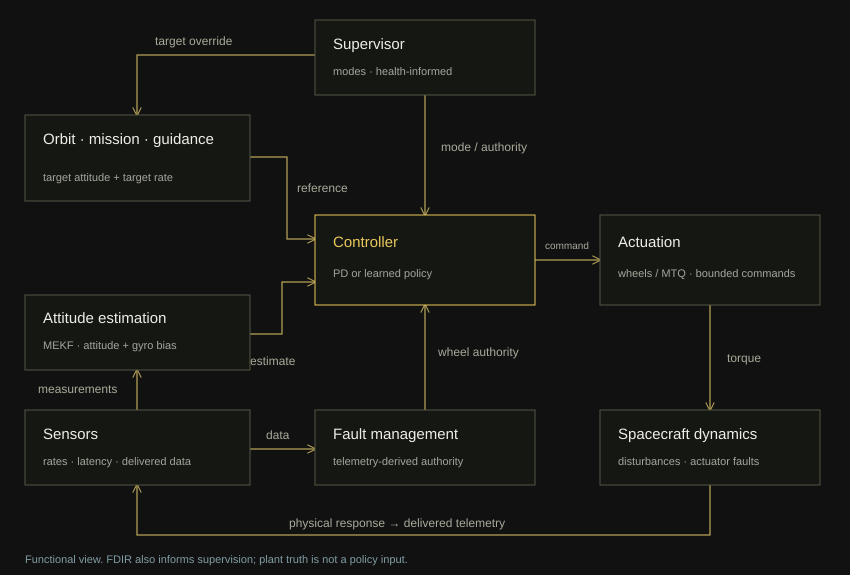

GNC perspective
Classical GNC structure
with RL learned motor control
This section dedicated to projects aspects related to sensing, estimation, guidance, as well as how they implemented in the project and supervisory authority mananges them.
The learned controller has a defined place in the system


The task is satellite's attitude control: orient the body and follow a changing pointing reference. Orbit position and velocity provide mission context. The policy does not command orbital maneuvers, only control reactions wheels motors.
The architecture keeps guidance, navigation, and control responsibilities. Reinforcement learning changes the control law and its action space, while estimation and mission management logic remain explicit.
GNC is a broader systems/control-engineering term, whereas ADCS emphasizes satellite's attitude, in current project the satellite doesn’t have thrusters only reaction wheels. Even if suggest a magnetic torque as a thruster is not powerful enough to accelerate the satellite or to shift it from it’s orbit. In the scope on this project GNC described in relation to attitude. Although this project is about RL control, it is not an end-to-end neural GNC system. The RL policy primarily occupies the control portion of an otherwise conventional GNC/ADCS architecture. And RL control is just a part of the whole system that still does a considerable part of attitude control, however it’s not the whole satellite is controlled by RL agent.
- Mission & guidance
- Orbit and mission state produce a target attitude and angular rate, persistent mission phases and continuous references with rate and acceleration limits.
- Navigation
- Delivered sensor measurements produce estimated attitude and gyro bias. The controller receives tracking errors derived from that estimate.
- Control & actuation
- PD or a learned policy generates torque or motor commands, depending on the experiment. Actuator conditioning and physical limits determine the applied response.
- Supervisory authority
- The supervisor acts across the loop. It can select operating modes and override a mission target, including a safe Sun-pointing reference. Fault management supplies estimated wheel authority.
This separation makes a poor trajectory diagnosable: a target discontinuity, an estimator acquisition failure, and an inadequate control command are different problems.
Code · supervisory authority supervisor
Code · mission state mission
Sensors integration
Gyro measures the satellite's angular acceleration around its axes. It does not measure where the satellite is pointing directly, but rather how fast that orientation is changing. Star tracker extract mutual constellations arrangement to determine the satellite's exact attitude. Sun and magnetic-field measurements constrain orientation through Sun and Earth magnetic fields reference directions. GNSS supplies position, velocity, and time for navigation context, while this is enought to determine a direct attitude measurement.
| Measurement | Rate | Delivery latency |
|---|---|---|
| Gyroscope / wheel tachometers | 20 Hz | 20 ms |
| Star tracker | 2 Hz | 80 ms |
| Magnetometer / Sun sensor | 10 Hz | 20 ms |
| GNSS | 1 Hz | 100 ms |
Multiplicative Extended Kalman Filter is a specialized variant of the Extended Kalman Filter. It was designed specifically to estimate the attitude of an aireal object based on quaternion. The MEKF carries a nominal quaternion and a six-component error state: three small attitude errors and three gyro-bias errors. This retains a quaternion for global orientation while estimating a local correction. The project convention is scalar-first quaternions, body-to-inertial rotation, and a right-multiplicative error.
The MEKF is designed as a central hosting platform capable of accepting any vector or attitude sensor. The basic operation include:
- The guiding thread: The gyroscope is the dynamic heart of the system. It measures rotations at a very high frequency about 100Hz. The MEKF uses this data to continuously update the global attitude. However a gyroscopes drifts. Without correction, after a few minutes an error becomes huge.
- Calculating the residual: to correct gyro drift, the MEKF utilizes the other sensors as soon as they deliver data. The key is that the MEKF translates each measurement into comparable information:
- The Star Tracker provides direct orientation measurement. The MEKF compares this to the attitude predicted by the gyro. The discrepancy between the two immediately provides the 3D error vector.
- Although GNSS does not directly measure attitude, it is essential for the MEKF to utilize the magnetometer and sun sensor. To determine which magnetic field vector or Sun vector the satellite should observe, the filter must know the satellite's exact position in space. GNSS data therefore feeds the ephemeris and IGRF reference models.
- The Magnetometer and Sun sensor provide references, that are essential for correction. The MEKF then uses its position, provided by GNSS to consult its mathematical map - the Earth's magnetic model and determine which vector the satellite should see if the attitude were perfect. The MEKF compares the angle between theoretical vector and an observed vector. This deviation angle is directly related to the orientation error.
- Centralized fusion: regardless of whether the correction originates from stars, Sun, Earth magnetic field, the MEKF always converts the information into that same 3D error vector. The filter applies the Kalman gain, corrects the global quaternion via multiplication, removes the gyroscope bias, and restarts the process for the next cycle. It transform any vector or attitude measurement into a small 3D geometric correction
Code · sensor delivery models sensors
Code · MEKF and delayed updates estimator
Different control modes to train policy
The conventional reference is a proportional–derivative controller using attitude and rate error. A body-torque command must then be translated into feasible wheel torques by an allocator. Four wheel axes provide actuator redundancy, subject to geometry and limits.
| Formulation | Policy output | What remains explicit |
|---|---|---|
| Residual PD | Three corrections to PD body torque | PD law and wheel allocation |
| Direct body torque | Three body-torque commands | Wheel allocation |
| Direct motor control | Four wheel-motor commands | Actuation limits, conditioning, and supervision |
In current implementation at motor-direct mode, the policy bypasses the ordinary body-torque allocator. Its inputs include wheel speeds and estimated authority, so it can condition motor use on the current actuator state. Its commands still encounter motor lag, dead zones, friction, torque limits, and speed limits.
A learned mapping can jointly account for tracking error, wheel state, and changing authority without fixing a separate hand-designed rule for every combination. Direct wheel control also permits learned use of the redundant actuator space. While the trails at different scenarious look promissing, a fair comparative analysis of control modes a required to establish the outputs.
Code · PD, residual and direct control control
Pointing and momentum management
Reaction wheels exchange angular momentum with the spacecraft. External disturbances can build up stored wheel momentum until speed limits restrict further control. Magnetic torquers create an external torque, τ = m × B, through interaction with the local magnetic field. The magnetic control law tries to create a torque opposite to current torque created by wheels. But magnetorquers can only create torque perpendicular to Earch magnetic field plane in satellite’s position. So the desired unloading torque is projected onto the achievable plane. Over an orbit the geomagnetic-field direction changes, which eventually gives controllability in all axes.
During momentum unloading we have two goals: remove stored wheel momentum while also don't ruin spacecraft pointing. The magnetorquer exerts a torque on the entire spacecraft. So wheel control produces approximately the opposite body torque to preserve pointing while allowing angular momentum to transfer out of the wheels and into Earth's magnetic field interaction. The environment computes predicted magnetic torque from the measured magnetic field and feeds a compensation term into wheel control. MOMENTUM_UNLOAD is not obligatory a separete supervisory mode, depending on a situation a satellite might continue FINE_POINTING while simultaneously performing MOMENTUM_UNLOAD in the background.
Next GNC evidence: tracking-error distributions, settling and saturation behavior, estimator acquisition, and matched controller trials. C1’s initial Basilisk harness is the next independent validation step, not a completed cross-simulator result.
Background: NASA small-spacecraft GNC survey, reaction wheels and magnetic torquers.
Code · wheel and magnetic actuation actuators